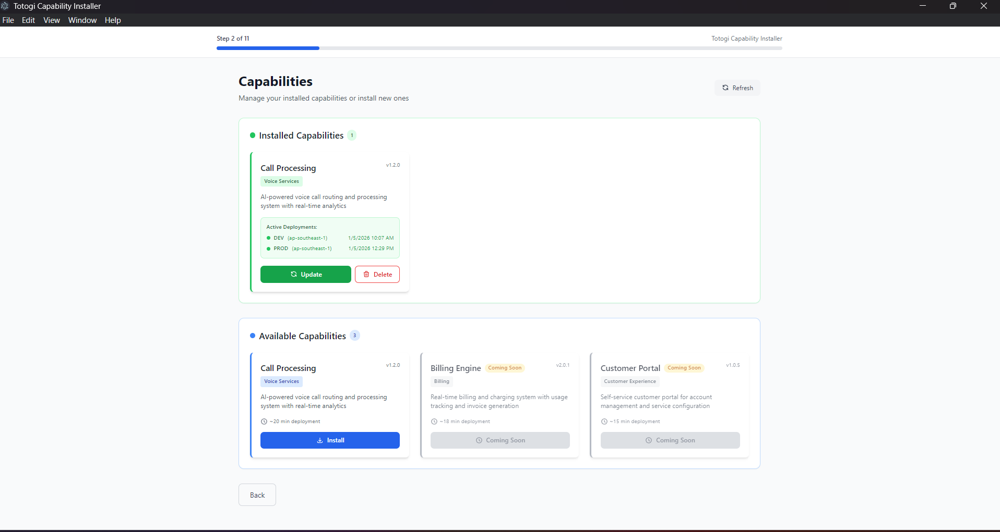
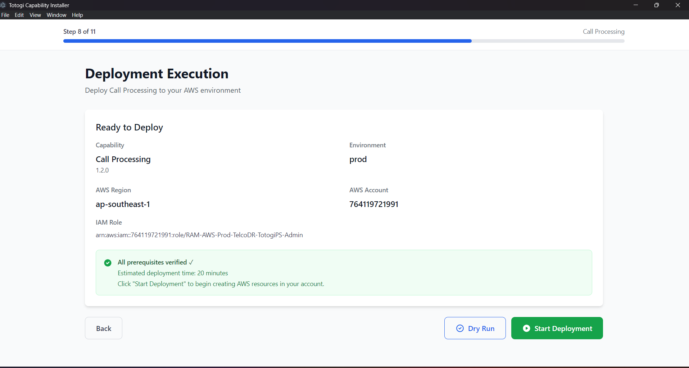

Managing Deployments¶
This guide covers how to manage your deployed capabilities, including updates, deletions, and monitoring.
Viewing Deployed Capabilities¶
Installation History¶
Access your deployment history from the Welcome screen by clicking View Installation History:

The Installation History displays: - Capability Name: The deployed capability - Version: Deployed version number - Environment: Target environment (dev/staging/prod) - Region: AWS region - Deployment Date: When the deployment occurred - Status: Current deployment status
Capability Selection Screen¶
From the main capability screen, you can see all your deployments:

Installed Capabilities (green section) - Currently deployed capabilities - Active environments - Last deployment timestamp - Update and Delete actions
Available Capabilities (blue section) - Capabilities ready to install - Can install to new environments
Updating Deployments¶
When to Update¶
Update a deployment when: - New capability version is available - Configuration changes are needed - Infrastructure updates are required - Security patches need to be applied
Update Process¶
- Go to Capability Selection
-
Find your installed capability in the green section
-
Click "Update"
-
Review current configuration
-
Environment and region are pre-populated
-
Enter AWS credentials

- Verify permissions

-
Select deployment strategy
-
Execute update

Update Strategies¶
| Strategy | Use When | Impact |
|---|---|---|
| Update Existing | Stacks are healthy | Minimal downtime |
| Clean Deploy | Stacks are in failed state | Full recreation, data loss |
Update vs. Clean Deploy¶
Update Existing: - Preserves existing resources - Updates only changed components - Minimal downtime - Preserves data
Clean Deploy: - Deletes all existing stacks - Creates fresh infrastructure - Causes downtime - May lose data (backup first!)
Deleting Deployments¶
When to Delete¶
Delete a deployment when: - Capability is no longer needed - Environment is being decommissioned - Starting fresh after issues - Cost optimization
Delete Process¶
- Go to Capability Selection
-
Find your installed capability
-
Click "Delete"
-
Confirm deletion (this is destructive!)
-
Enter AWS credentials
-
Verify permissions
-
Execute deletion
What Gets Deleted¶
The deletion process removes:
Frontend Resources: - S3 buckets (and contents) - CloudFront distributions - WAF rules - ACM certificates - Route53 records
Backend Resources: - ECS services and clusters - Load balancers - VPC and networking - DynamoDB tables - S3 data buckets - Secrets Manager secrets - CloudWatch logs - IAM roles
Data Backup¶
Before deleting, backup: - DynamoDB tables - S3 bucket contents - Secrets Manager values - CloudWatch logs
Backup Commands¶
# Backup DynamoDB table
aws dynamodb create-backup \
--table-name capability-prod-data \
--backup-name capability-backup-$(date +%Y%m%d)
# Sync S3 bucket
aws s3 sync s3://capability-prod-data s3://capability-backup-data
# Export secrets
aws secretsmanager get-secret-value \
--secret-id capability-prod-secrets \
--query SecretString \
--output text > secrets-backup.json
Monitoring Deployments¶
Deployment Health¶
After deployment, verify service health:

Health Status Indicators: - ✅ Healthy - Service is operational - ⚠️ Degraded - Service has issues - ❌ Unhealthy - Service is down
CloudWatch Metrics¶
Monitor your deployment health via CloudWatch:
ECS Metrics: - CPU utilization - Memory utilization - Running task count - Service health
ALB Metrics: - Request count - Response time - Error rates (4xx, 5xx) - Active connections
CloudFront Metrics: - Requests - Bytes downloaded - Error rate - Cache hit ratio
Setting Up Alarms¶
Create CloudWatch alarms for:
| Metric | Threshold | Action |
|---|---|---|
| ECS CPU | > 80% | Scale up |
| ECS Memory | > 80% | Scale up |
| ALB 5xx errors | > 1% | Alert |
| ALB latency | > 2s | Alert |
Viewing Logs¶
ECS Container Logs:
Application Logs:
Deployment States¶
Understanding Stack States¶
| State | Description | Actions Available |
|---|---|---|
CREATE_COMPLETE |
Successfully created | Update, Delete |
UPDATE_COMPLETE |
Successfully updated | Update, Delete |
CREATE_IN_PROGRESS |
Being created | Wait |
UPDATE_IN_PROGRESS |
Being updated | Wait |
DELETE_IN_PROGRESS |
Being deleted | Wait |
ROLLBACK_COMPLETE |
Creation failed | Delete only |
UPDATE_ROLLBACK_COMPLETE |
Update failed | Delete or Clean Deploy |
DELETE_FAILED |
Deletion failed | Manual cleanup |
Handling Failed States¶
ROLLBACK_COMPLETE: 1. Review CloudFormation events for error 2. Fix the underlying issue 3. Delete the stack 4. Redeploy
UPDATE_ROLLBACK_COMPLETE: 1. Review what caused the update to fail 2. Choose Clean Deploy strategy 3. Or manually fix and retry update
DELETE_FAILED: 1. Check which resources failed to delete 2. Manually delete stuck resources 3. Retry stack deletion
Multi-Environment Management¶
Environment Strategy¶
| Environment | Purpose | Resources |
|---|---|---|
| dev | Development | Minimal, cost-optimized |
| staging | Pre-production | Production-like |
| prod | Production | Full resources, HA |
Deploying to Multiple Environments¶
Use the Environment Configuration screen to select your target:

Recommended Workflow:
- Deploy to dev first
- Test new features
-
Validate configuration
-
Promote to staging
- Integration testing
-
Performance testing
-
Deploy to production
- After staging validation
- During maintenance window
Environment Isolation¶
Each environment has: - Separate AWS resources - Unique domain names - Independent scaling - Isolated data
Cost Management¶
Cost Breakdown¶
| Component | Dev | Staging | Prod |
|---|---|---|---|
| CloudFront | $5 | $10 | $50+ |
| ALB | $20 | $20 | $20 |
| ECS Fargate | $10 | $50 | $200+ |
| NAT Gateway | $0 | $45 | $45 |
| S3 | $1 | $5 | $20+ |
| DynamoDB | $5 | $10 | $50+ |
| Total | ~$41 | ~$140 | ~$385+ |
Cost Optimization Tips¶
Development: - Use FARGATE_SPOT for ECS - Disable NAT Gateway (use public subnets) - Set auto-scaling minimum to 0 - Use on-demand DynamoDB billing
Production: - Use Reserved Capacity for predictable workloads - Enable S3 lifecycle policies - Optimize CloudFront caching - Right-size ECS tasks
Cleaning Up Unused Resources¶
Regularly review and delete: - Unused ECS task definitions - Old CloudWatch log groups - Orphaned S3 buckets - Unused security groups
Troubleshooting Deployments¶
Common Issues¶
Deployment Stuck: 1. Check CloudFormation events 2. Look for resource creation failures 3. Check service limits
Health Checks Failing:
- Verify security group rules
- Check container logs
- Validate health check endpoint
DNS Not Resolving: 1. Wait for propagation (up to 48 hours) 2. Verify Route53 records 3. Check hosted zone configuration
SSL Certificate Issues: 1. Verify domain ownership 2. Check DNS validation records 3. Wait for certificate validation
Getting Help¶
- Check deployment logs in the installer

- Review CloudFormation events in AWS Console
- Check CloudWatch logs for application errors
- Contact support with deployment ID and logs
Managing Kubernetes (EKS) Deployments¶
If you deployed using the EKS (Kubernetes) option, your capability runs as a NexusAICapability custom resource managed by the Kubernetes Operator.
Viewing Kubernetes Deployments¶
# List all deployed capabilities
kubectl get nexuscapabilities -A
# Short form
kubectl get tc -A
# Get detailed status
kubectl describe tc <capability-name> -n <namespace>
Checking Application Pods¶
# List pods in capability namespace
kubectl get pods -n <capability>-<environment>
# Example: nexus-ai-dev
kubectl get pods -n nexus-ai-dev
# View pod logs
kubectl logs -f deployment/<capability>-frontend -n <namespace>
kubectl logs -f deployment/<capability>-backend -n <namespace>
Updating Kubernetes Deployments¶
# Scale replicas
kubectl patch tc <name> -n <namespace> --type=merge \
-p '{"spec":{"backend":{"replicas":3}}}'
# Update image version
kubectl patch tc <name> -n <namespace> --type=merge \
-p '{"spec":{"backend":{"image":"new-image:tag"}}}'
# Or edit directly
kubectl edit tc <name> -n <namespace>
Deleting Kubernetes Deployments¶
Note: AWS resources (DynamoDB, S3) are deleted or retained based on the deletionPolicy in the capability spec.
Operator Management¶
# Check operator status
kubectl get pods -n nexus-system
# View operator logs
kubectl -n nexus-system logs -f deployment/nexus-operator
# Restart operator
kubectl -n nexus-system rollout restart deployment/nexus-operator
Kubernetes-Specific Monitoring¶
Application Metrics:
# CPU and memory usage
kubectl top pods -n <namespace>
# Events
kubectl get events -n <namespace> --sort-by='.lastTimestamp'
Service URLs:
# Get LoadBalancer URLs
kubectl get svc -n <namespace>
# Frontend URL
kubectl get svc <capability>-frontend -n <namespace> \
-o jsonpath='{.status.loadBalancer.ingress[0].hostname}'
For detailed Kubernetes deployment instructions, see Kubernetes Deployment Guide.
Best Practices¶
Deployment¶
- ✅ Always test in dev/staging first
- ✅ Use consistent naming conventions
- ✅ Document configuration changes
- ✅ Backup data before updates
Monitoring¶
- ✅ Set up CloudWatch alarms
- ✅ Enable detailed monitoring
- ✅ Review logs regularly
- ✅ Track costs monthly
Security¶
- ✅ Rotate credentials regularly
- ✅ Review IAM permissions
- ✅ Enable AWS Config rules
- ✅ Use AWS Security Hub
Kubernetes-Specific¶
- ✅ Monitor operator health regularly
- ✅ Use
deletionPolicy: Retainfor production data - ✅ Configure resource limits in capability spec
- ✅ Set up Pod Disruption Budgets for HA
Next Steps¶
- AWS Configuration - Detailed AWS setup
- Troubleshooting - Common issues and solutions
- FAQ - Frequently asked questions
- Kubernetes Deployment - EKS deployment guide